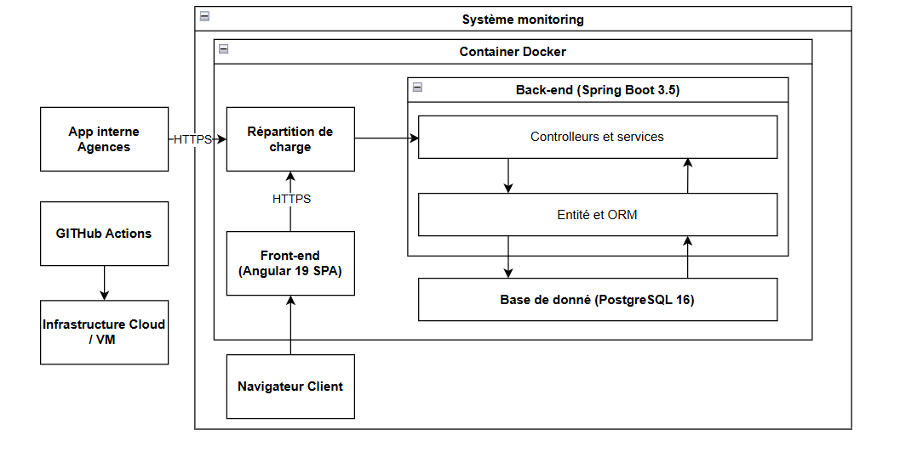
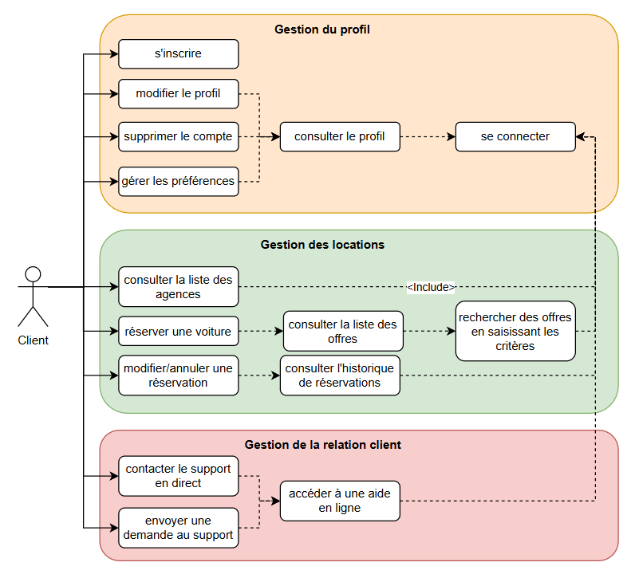
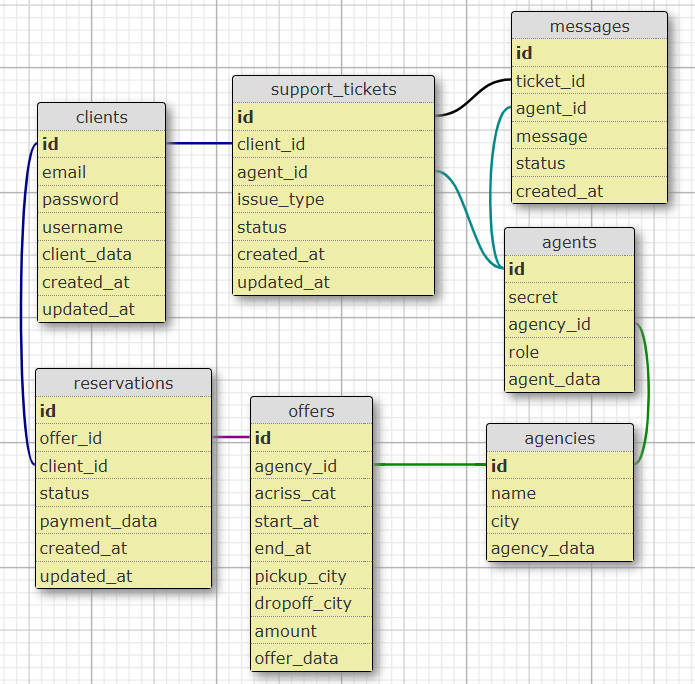

Your Car Your Way
Présentée par Xinhe YU
le 29 août 2025
Plan de la présentation
1. Business Requirements
2. Architecture logicielle
3. Compliance Assessment
4. Proof of Concept
Business Requirements
Ajout des fonctionnalités manquantes
Gestion du profil utilisateur
Internationalisation
Support client en 2 formes
Exposition des données aux agences via API REST
Architecture logicielle
Principes d’architecture
Séparation des couches
API RESTful et sécurisée
Design modulaire, scalable et compatible
Partie Audit : Contexte et fonctionnalité

Partie Audit : Contexte et fonctionnalité

Partie Audit : Contexte et fonctionnalité

Architecture logicielle
Technologies éprouvées
Modulaire et containerisée
Design orienté conformité
Compliance Assessment
Composants logiciels
:
fonctionnalités couvertes, API documentées, tests unitaires et intégration
Services tiers
:
audit conformité (ex : Stripe), gestion sécurisée des clés et versions
Données personnelles
:
RGPD, portabilité, suppression, paiement externalisé
Infrastructure & sécurité
:
CI/CD automatisé, sauvegardes, JWT, RBAC, CORS, supervision continue
POC :
Support client en temps réel
Angular + Java Spring Boot + PostgreSQL
STOMP via WebSocket
Conclusion
Merci de votre attention !